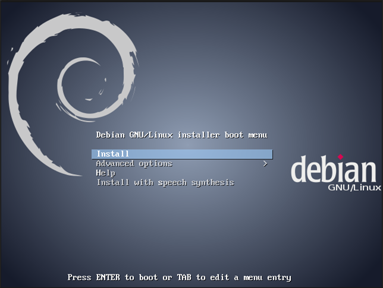

安裝首頁，先別急著按下 Install！
|
本實作內容主要目的：讓同學學會如何安裝作業系統，以下將帶各位同學實習安裝 Debian 作業系統。 將來大家都有機會接觸到 Linux 作業系統，在正式學習如何操作 Linux 系統之前，必須先學會如何自行安裝（重新安裝）作業系統！
由於燒錄光碟片成本耗大，因此在課堂上我們使用網路開機方式來安裝作業系統，同學回家後將網路開機改為光碟開機，其餘過程均與課堂上相同。
以下操作過程均建立在網路環境具有 DHCP 情境下。
為了避免輸入錯誤以及方便設置使用環境，我們使用下列按鈕來快速取代各個不同參數。
您的 IP 位址是：[Host-IP]
將光碟映像檔(.iso) 下載下來後，燒錄成光碟片。或是參考 UNetbootin，製作可開機 USB 碟來使用
若是家中環境使得安裝過程中沒有網路可以使用 (例如使用撥接上網 pppoe)，請下載完整版光碟。
安裝過程請參考以下各圖(圖文不相同時，以文字為主！)
|
01
 | 安裝首頁，先別急著按下 Install！ |
|
01
| 登入後的畫面，首先我們在右下方時間左邊的圖示上按下右鍵。 |
首先我們先將自己的帳號加入 sudoers，儘量避免使用 root 帳號會比較安全一點！
# # This file MUST be edited with the 'visudo' command as root. # # Please consider adding local content in /etc/sudoers.d/ instead of # directly modifying this file. # # See the man page for details on how to write a sudoers file. # Defaults env_reset Defaults mail_badpass Defaults secure_path="/usr/local/sbin:/usr/local/bin:/usr/sbin:/usr/bin:/sbin:/bin" # Host alias specification # User alias specification # Cmnd alias specification # User privilege specification root ALL=(ALL:ALL) ALL cloud ALL=(ALL:ALL) ALL # Allow members of group sudo to execute any command %sudo ALL=(ALL:ALL) ALL # See sudoers(5) for more information on "#include" directives:
再來我們要將 network-manager 移除，雖然圖形界面似乎很便利，但是他常常會出來搞鬼！
手動修改設定檔，養成好習慣，更改任何設定檔之前要先備份！
# This file describes the network interfaces available on your system # and how to activate them. For more information, see interfaces(5). # The loopback network interface auto lo iface lo inet loopback auto eth0 iface eth0 inet static address [Host-IP] netmask 255.255.255.0 gateway 192.168.102.254
接著是設定 DNS servers，一樣要記得先備份！
重開機試試看設定是否都正確！